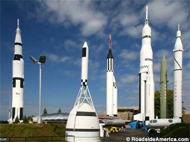

Huntsville
General Information
- Population: 249,102
- Incorporation Year: 1860
- Region: North Alabama / Tennessee Valley
- City classification: Urban
- Income vs. State Average: $49,064 / $43,984
Huntsville has an estimated population of 249,102 residents following the 2020 state census, with an annual increase of 1.33%. The city has an average income per person of $49,094 per year compared to the state average of $43,984 per year.
After the end of World War 2, Huntsville experienced a significant boom in growth, ushered in by the construction of Red Stone Arsenal and NASA's Marshall Space Flight Center. Today, the Space and Rocket Center is still a major attraction in this urban city, along with the Botanical Gardens and the Broadway Theatre League.